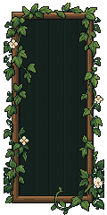
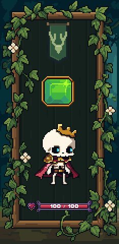

Fuller foliage · Stage 2 revision
The original PixelLab leaf shapes and side vines, fitted around the unchanged modular timber frame. Same portrait size and content positions. Approved background preserved. No new generations.
Unity art-only review with static readability samples. 720×480 capture; exact 2× capture. No production integration or merge.
Source and native foliage
 Original PixelLab design · native pixels at 2×
Original PixelLab design · native pixels at 2×
Updated modular study · native 1×Same study at 2×
Updated portrait in UnityChecks passed
Unity compilation, frame geometry and clipping; saved LibreSprite round-trip; binary alpha; whole-pixel positions; unchanged character/gem/HP image bindings; Rattlebones pixel comparison; unchanged approved scenery. Shared frame dimensions and lower HUD preserved.
Revision notes · Validation evidence · Module dimensions and placement
Stopped for visual approval. Stage 3 has not started.